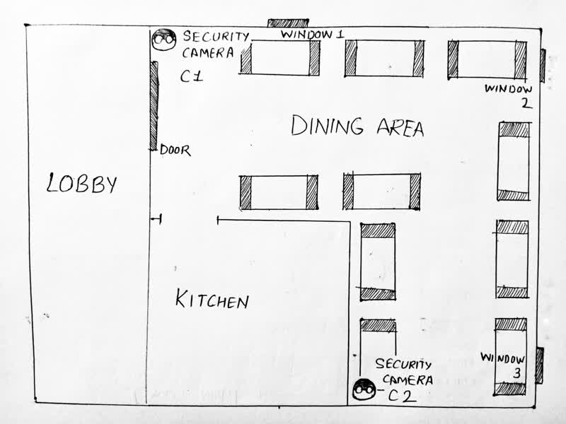
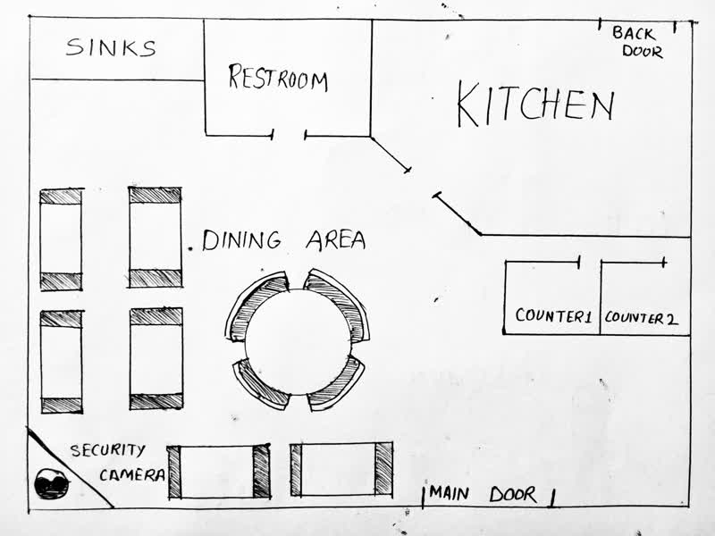
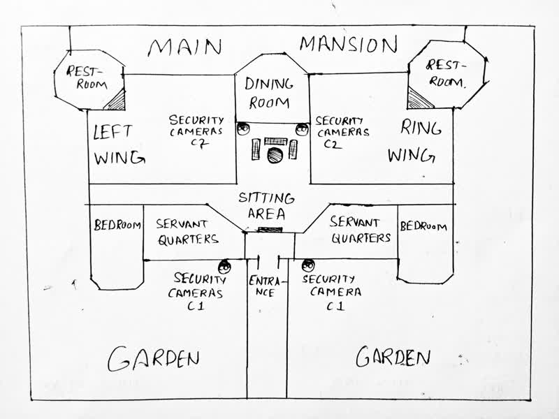
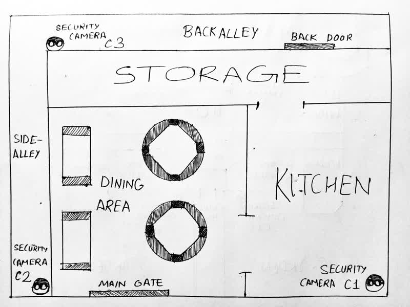

Connor's Hotel

Leonardo's Restraunt

Romano Mansion

Tina's Café

Connor's Hotel C1
1986 March 23, 9:00 pm - 10:00 pm
On a seat near the rear window a couple is eating shortcake.
Connor's Hotel C2
1986 March 23, 9:00 pm - 10:00 pm
On the seat near the window sit Connor Quinn and a slender man with long hair wearing a face mask. They are sipping coffee and chatting. Quinn begins to panic. He calls someone. Once call has ended, the other man gives him a thumbs up. Quinn gives the man a suitcase. They chat and eat for a while.
Leonardo's Restraunt
Leonardo serving customers. Once all the customers leave he starts cleaning the dishes.
Romano mansion C1
1986 February 4
Mrs. Anslow enters the hand gate with a bag in her hands.
Romano mansion C2
1986 February 4
Dr. Lee and Giovanni sitting and chatting. Mrs. Anslow enters. She hreets Giovanni, puts her hand in her bag and then shakes hands with Dr. Lee. Dr. Lee then puts his hands in his pockets. Mrs. Anslow and Giovanni talk for a whle. She leaves. Dr. Lee also leaves after some time. Giovanni is left alone in the sitting room.
Tina's Café C1
1986 January 26 4:21 pm
Police drags Marco out. Mrs. Anslow begs to Tina. Tina rushes to stop police. Mrs. Anslow enter and exit kitchen and then leaves the café.
1986 March 23 10:43 pm
A tall muscular man unlocks the café. He carries a dead body inside and goes into the kitchen. Exits the kitchen and leaves the café and locks the door.
Tina's Café C2
1986 March 23 10:35 pm
Marco waiting. Gracia arrives. They start talking and shouting. Marco pushes Gracia down. Carlos comes running and punches Marco. They fight. Gracia stops them and she and Carlos leave. Marco loiters around for a while and walks towards the back alley.
Tina's Café C3
1986 March 2 11:37 pm
The alley is desolate. Two men enter the alley from opposite side. One is slender and has long hair. Other is big and muscular. Both have their faces covered. The smaller one gives something small and metallic to the larger one. They part ways without saying a word.
1986 March 23 10:40 pm
Marco is shot and falls down. A tall muscular body apporaches the body, lifts it on his shoulder and walks dowards the back door.